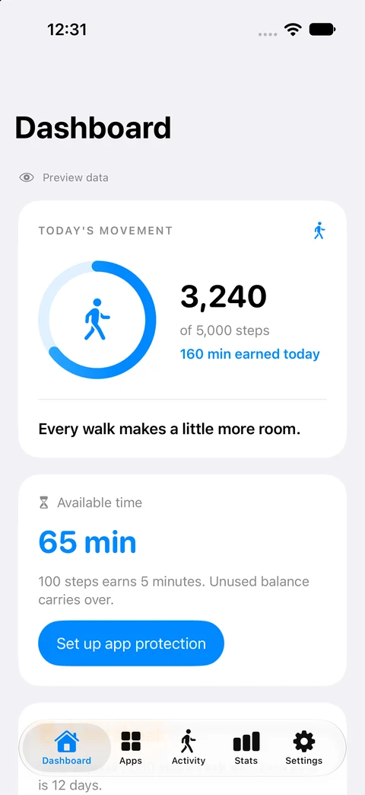
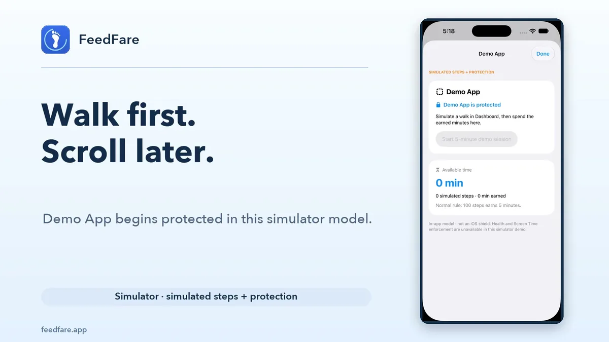
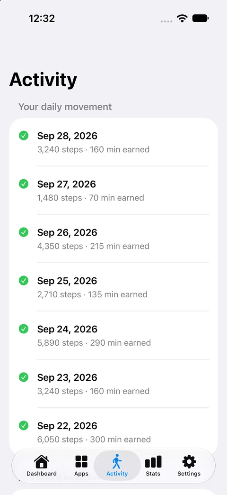
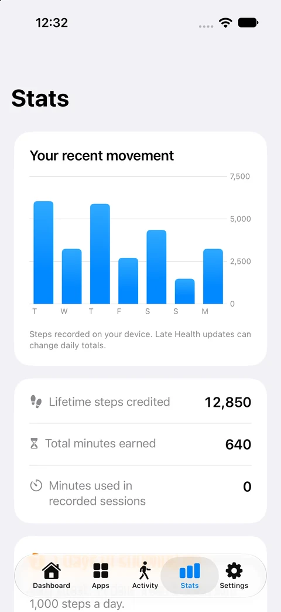

Choose your apps.
Pick the apps you reach for out of habit. Screen Time access lets FeedFare help you protect that space.
A little movement. A better balance.
Choose distracting apps, walk to earn minutes, then unlock one app for a timed session. Give your next scroll a reason to start with a walk.
Full app. No subscription.
No FeedFare account.
For iPhone and iPad with iOS or iPadOS 17+. Apple shows your regional price and device compatibility.
iPhone Duo update now live
The idea in 56 seconds
See the earning rule and a timed session in a clearly labeled simulator example.

Before you buy
Adjust the steps-to-minutes rule and keep unused earned minutes for later. The full app is included.
Small steps, on your terms
Your next scroll can start with a little movement. FeedFare helps you make that connection.
Pick the apps you reach for out of habit. Screen Time access lets FeedFare help you protect that space.
Set a walking rule that fits your day. Your iPhone’s steps become earned screen time.
Use what you earn for a session, then return to your day. A little more intention, one walk at a time.
An example using FeedFare’s default rule: every 100 steps earns 5 minutes. You can change your rule in the app.
An illustration, not a step tracker. Features and limits depend on your installed version.
Native FeedFare · Made for iPhone and iPad
Familiar iOS controls, a clear view of your progress, and a little encouragement to keep moving.
A simple daily history of your steps and earned minutes.
View full Activity screen
Your recent movement, earned time, and streaks in one place.
View full Stats screen
Actual simulator screens from the native app, using example data. Requires iOS or iPadOS 17 or later. Appearance adapts to your system, including Liquid Glass on supported versions. Older installed versions may look and behave differently.
iPhone Duo · Now on the App Store
FeedFare 2026.10.22 adds layouts designed for iPhone Duo: a focused compact view, and more room for your steps, app choices and session controls when open.
Version 2026.10.22 is now live on the App Store. Install the latest FeedFare update. Check Apple’s listing for your device’s compatibility and regional availability. Layouts have been checked in simulators; physical iPhone Duo testing is still pending.
About the Duo updateHealth reads step counts. Motion supplies live steps. Screen Time enables app protection. Optional reminders are your choice.
The native app stores your walking history and app selections on your device. This version has no advertising or third-party analytics SDK. Device backups follow your Apple settings.
Permission settings and delayed step updates can affect the experience. Our setup and troubleshooting guide walks you through them.
Make room for a little movement
Native FeedFare is available on the App Store for supported iPhone and iPad devices.
View on the App StoreThe native release has a one-time US $4.99 download price, with the full app included. This version has no in-app paywall, trial, or required subscription. Check the App Store for device compatibility and your regional price.
Already have FeedFare? Install the native update through the App Store using the Apple Account that owns the app for full native access on a supported device. Previous subscription plans have been retired and no longer renew. Review previous subscription details.
A few helpful answers
From connecting your steps to managing previous purchases.
Visit supportChoose your walking rule in FeedFare. The native app defaults to 100 steps earning 5 minutes. For example, 500 steps earns 25 minutes at that setting. Use earned minutes for timed access to a selected app. Features and limits in older installed versions may differ.
Apple Health access lets FeedFare read step counts. Motion & Fitness provides live step counting. Screen Time access lets you choose apps to protect. Reminders are optional. See the setup guide for what each permission does.
Native FeedFare is available on the App Store for iPhone and iPad with iOS or iPadOS 17 or later. Check the listing for your device’s compatibility and regional availability. These screenshots show the native app with example data, and appearance varies with your system settings.
The native release has a one-time US $4.99 download price, with regional prices shown on the App Store. Check the App Store for your regional price before downloading. The full native app is included without an in-app paywall, trial, or required subscription. Existing FeedFare owners receive full native access when they install this update on a supported device. Previous subscription plans have been retired and no longer renew. You can review previous charges and any remaining subscription period in Apple’s subscription settings.
FeedFare supports Apple Family Sharing for eligible family groups. Apple manages purchase sharing and eligibility. Each person sets up FeedFare on their own device; their app selections and earned minutes remain separate. This does not provide remote parental controls or a shared minute balance. Learn about Apple Family Sharing.
FeedFare can read steps that a compatible Apple Watch has synced to Apple Health on your iPhone. Those updates can arrive later. Open FeedFare and refresh if the total has not caught up. You do not need a watch to count steps with your iPhone.
In the native app, a session gives access to one selected app for the time you choose. Other selected apps stay protected, and the selected app is protected again when the session ends. Protection depends on Screen Time authorization. Get help with app protection.
Native FeedFare supports iPhone and iPad with iOS or iPadOS 17 or later. Its appearance adapts to the system, including Liquid Glass on supported versions. Older devices may continue to run an earlier installed version with different features; check the App Store for compatibility and availability for your device. Version 2026.10.22 is now live on the App Store with compact and expanded layouts designed for iPhone Duo. Install the latest FeedFare update and check Apple’s listing for your device’s compatibility and regional availability. About the Duo update.
FeedFare is an independent app by Nick Rae. The idea is simple: give a little movement a place in the moments you would otherwise spend scrolling. Choose your rule, find your pace, and build a routine that works for you.